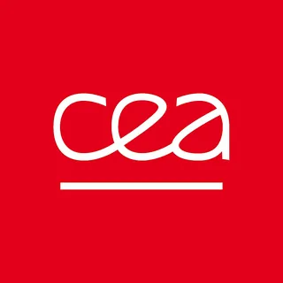
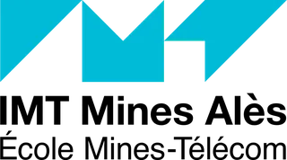

Projet fil rouge 3A Mécatronique · CEA Marcoule × IMT Mines Alès
Positionner une sonde à 1 mm près. Sans jamais toucher la paroi.
SPOC asservit la distance et le parallélisme d'une sonde radiologique jusqu'à 50 kg face aux parois contaminées, pour la cartographie des installations nucléaires en démantèlement.
Consigne d réglable de 5 mm à 30 cm — CDC CEA, besoins 29 à 31
Exigences clés du cahier des charges
- Précision distance
- ± 1 mm
- Parallélisme
- ± 1°
- Charge utile
- ≤ 50 kg
- Autonomie
- ≥ 8 h
Exigences issues du cahier des charges CEA Marcoule. Statut de vérification détaillé sur la page Projet.
02
Le projet en trois vues
03
Trois pôles techniques
Maîtrise d'ouvrage & cadre académique

